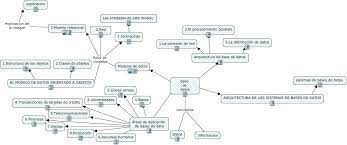
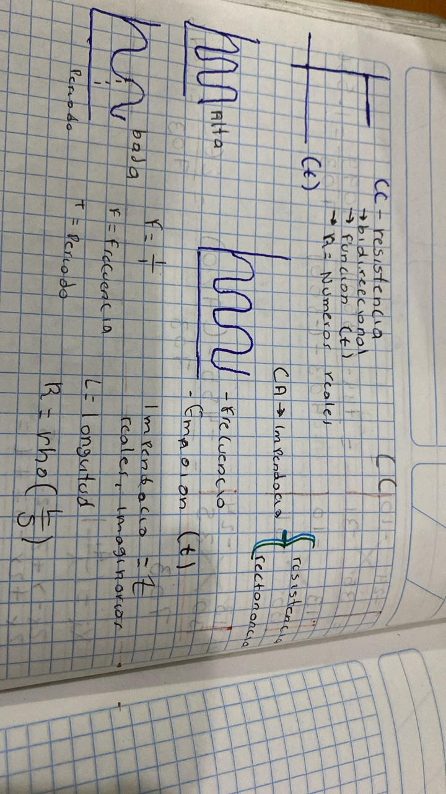
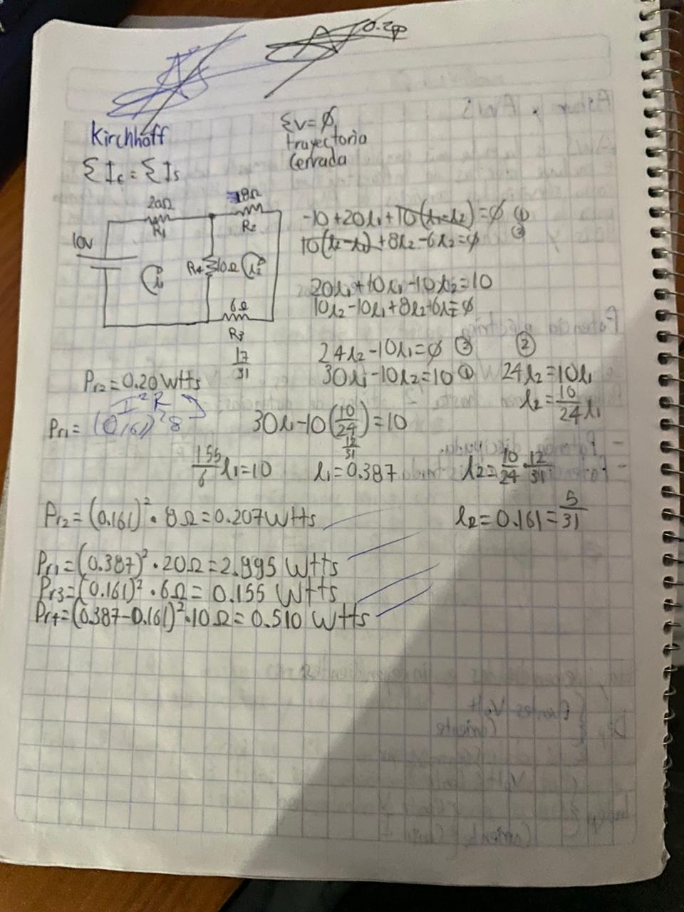

Telecomunicaciones
Las telecomunicaciones se refieren a la transmisión de información, voz, datos y video a través de una variedad de medios, como cables, ondas electromagnéticas, satélites y sistemas de comunicación inalámbrica. Este campo abarca una amplia gama de tecnologías y servicios que permiten la comunicación entre personas, dispositivos y sistemas en todo el mundo.
Algunos aspectos clave de las telecomunicaciones incluyen:
Comunicación de voz: Esto incluye la transmisión de voz a través de teléfonos fijos y móviles. La tecnología ha avanzado desde las redes telefónicas tradicionales hasta las redes VoIP (Voz sobre Protocolo de Internet), que permiten la comunicación de voz a través de Internet.
Comunicación de datos: Las redes de datos son esenciales para la transmisión de información en forma de texto, imágenes, video y más. Esto incluye el acceso a Internet de banda ancha, la transmisión de datos móviles y las redes de área local (LAN) y de área amplia (WAN).
Televisión y transmisión de video: Las telecomunicaciones también son responsables de la transmisión de señales de televisión y video. Esto incluye la radiodifusión tradicional, la televisión por cable, la transmisión por satélite y los servicios de transmisión por Internet (streaming).
Comunicación inalámbrica: Las tecnologías inalámbricas, como las redes móviles (2G, 3G, 4G y 5G), Wi-Fi y Bluetooth, permiten la comunicación sin necesidad de cables. Estas tecnologías son fundamentales para dispositivos móviles, computadoras portátiles y otros dispositivos electrónicos.
Satélites de comunicación: Los satélites se utilizan para la transmisión de señales de telecomunicaciones a larga distancia. Esto incluye la televisión por satélite, las comunicaciones móviles y la transmisión de datos a nivel global.
Redes de fibra óptica: La fibra óptica es un medio de transmisión que utiliza luz para transportar datos a velocidades extremadamente altas. Es ampliamente utilizado en redes de telecomunicaciones de alta velocidad y en la infraestructura de Internet.
Redes sociales y servicios en línea: Las plataformas de redes sociales y los servicios en línea dependen en gran medida de las telecomunicaciones para conectar a personas en todo el mundo y permitir la comunicación en tiempo real.


Analisis de Nodos
El análisis de nodos es una técnica fundamental en la teoría de circuitos eléctricos y electrónicos utilizada para determinar las corrientes y tensiones en un circuito eléctrico. Esta técnica se basa en la Ley de Kirchhoff de corrientes, que establece que la suma algebraica de las corrientes que ingresan a un nodo en un circuito debe ser igual a la suma algebraica de las corrientes que salen de ese nodo.
El objetivo principal del análisis de nodos es encontrar las corrientes en todas las ramas del circuito, así como las tensiones en los nodos (puntos de conexión) del circuito. Esto es especialmente útil cuando se trabaja con circuitos complejos que contienen múltiples fuentes de energía (como baterías y generadores) y componentes (resistencias, condensadores, inductores, etc.).
El proceso típico de análisis de nodos implica los siguientes pasos:
Identificar todos los nodos en el circuito, designándolos con letras o números.
Seleccionar un nodo de referencia o nodo de tierra al que se le asigna un potencial de referencia de 0 voltios.
Aplicar la Ley de Kirchhoff de corrientes en cada nodo (excepto en el nodo de referencia). Esto implica establecer una ecuación que sume todas las corrientes que entran y salen de cada nodo.
Resolver el sistema de ecuaciones resultante para determinar las corrientes desconocidas en el circuito.
Utilizar las corrientes calculadas para encontrar las tensiones en las ramas del circuito mediante la Ley de Ohm.
El análisis de nodos es una técnica poderosa y versátil que se utiliza comúnmente en la ingeniería eléctrica para diseñar y analizar circuitos eléctricos y electrónicos. Permite comprender cómo se distribuyen las corrientes y tensiones en un circuito y es esencial para la resolución de problemas y el diseño de circuitos que cumplan con ciertos requisitos de funcionamiento.

Corriente Alterna
La corriente alterna, comúnmente abreviada como CA o AC (por sus siglas en inglés, Alternating Current), es un tipo de corriente eléctrica en la que la dirección del flujo de electrones cambia periódicamente. En contraste, la corriente continua (CC o DC) tiene un flujo constante de electrones en una sola dirección.
Las características principales de la corriente alterna incluyen:
Oscilación periódica: En una señal de CA típica, la dirección del flujo de electrones cambia de positivo a negativo y viceversa a intervalos regulares, creando un patrón de oscilación. Esto se expresa en términos de frecuencia, medida en Hercios (Hz), que indica cuántos ciclos completos ocurren por segundo.
Voltaje variable: La tensión o voltaje en una corriente alterna también cambia de manera sinusoidal, subiendo y bajando su valor de manera repetitiva. El valor máximo de esta variación se conoce como voltaje pico (Vp), y se usa comúnmente para describir la amplitud de la onda de CA.
Aplicaciones en la transmisión de energía: La corriente alterna es ampliamente utilizada en la generación y transmisión de energía eléctrica a largas distancias. Esto se debe en parte a que se puede transformar fácilmente a diferentes voltajes mediante transformadores, lo que permite reducir las pérdidas de energía durante la transmisión.
Uso doméstico y comercial: En la mayoría de los hogares y empresas, la electricidad suministrada es en forma de corriente alterna, ya que es conveniente para la distribución y puede utilizarse en una variedad de dispositivos y electrodomésticos.
Generación de CA: La corriente alterna se genera mediante alternadores, que son máquinas rotativas que convierten la energía mecánica en energía eléctrica de CA. Los generadores en centrales eléctricas son ejemplos de dispositivos que producen CA.
Representación matemática: La forma más común de representar matemáticamente una onda de corriente alterna es mediante una función senoidal, como la función seno o coseno. Esto se debe a que las ondas sinusoidales son fáciles de trabajar matemáticamente y describen con precisión la naturaleza de la CA.

Circuitos RLC
Los circuitos RLC son circuitos eléctricos que contienen resistencias (R), bobinas (L) y condensadores (C). Estos componentes se utilizan para crear circuitos que pueden tener propiedades eléctricas y electromagnéticas interesantes. Aquí hay una breve descripción de cada uno de estos componentes:
Resistencia (R): La resistencia eléctrica se mide en ohmios (Ω) y se representa con el símbolo "R". La resistencia limita la cantidad de corriente eléctrica que puede fluir a través de un circuito. Disipa energía eléctrica en forma de calor debido a la fricción electrónica.
Bobina (L): La bobina es un componente que almacena energía en forma de campo magnético cuando una corriente eléctrica fluye a través de ella. La unidad de inductancia es el henrio (H), y se representa con el símbolo "L". La inductancia se opone a los cambios en la corriente eléctrica, lo que significa que actúa como una especie de "freno" para la corriente.
Condensador (C): El condensador almacena energía en forma de carga eléctrica. Se mide en faradios (F) y se representa con el símbolo "C". Los condensadores almacenan carga en sus placas y liberan esa carga cuando se descargan. Actúan como un "almacén" de energía eléctrica.
Los circuitos RLC pueden combinar estos tres componentes de diversas maneras para crear circuitos complejos. La respuesta de estos circuitos a las señales eléctricas puede ser estudiada mediante análisis matemáticos y técnicas de circuitos, y pueden exhibir fenómenos interesantes como resonancia, amortiguamiento y oscilaciones.
Por ejemplo, un circuito RLC en serie consiste en conectar una resistencia, una bobina y un condensador en serie en un solo camino de corriente, mientras que en un circuito RLC en paralelo, estos componentes se conectan en paralelo. Cada configuración tiene propiedades únicas y se utiliza en aplicaciones específicas en electrónica y electricidad.
Los circuitos RLC son fundamentales en electrónica, telecomunicaciones, sistemas de control y muchas otras áreas de la ingeniería eléctrica y electrónica debido a su versatilidad para manipular señales eléctricas y electromagnéticas de diversas maneras.

Ejemplo de imagen